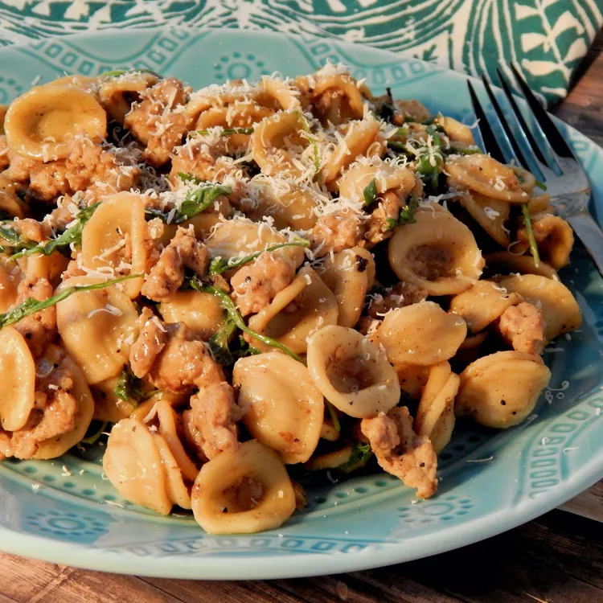

20 Things to Cook This Month That Have Nothing to Do
With Thanksgiving
1. Penne with Sausage and Broccoli Rabe

Broccoli rabe is in season, so pair it with penne, hot Italian sausage, crushed pepper flakes, and Parmesan for dinner with a kick.
2. "Pantry Raid" Chicken Enchilada Casserole
Keep black beans, taco seasoning, tomato sauce, and cornbread on hand to whip up this casserole all month. Look for certified gluten-free cornbread if you're accommodating food allergies, as recipe creator mama411 does.
3. Authentic Louisiana Red Beans and Rice

"I grew up in Louisiana and love red beans and rice; these are just like I remember. Serve with Tabasco sauce for a little kick," recipe creator MIAMI BEACH writes.
4. Chef John's Cassoulet
This traditional French dish takes some time (including soaking dried great Northern beans overnight), but the end result would be worth the effort on a cold November night.
5. Asian Orange Chicken
Use in-season oranges to make this sweet, zesty dish that our home cooks serve over rice or stir-fried veggies.
6. World's Best Lasagna
"If you want to try a real Italian lasagna, this is the one. The sauce is the key and would be great on anything. I added more garlic, but that was it. My family and friends thought this was an old secret family recipe. It is now, and they will never know." — ITALCOOK
7. Chef John's No-Knead Pumpkin Bread
"Another Chef John Winning recipe. Easy to make but you do have to schedule your time to make [it]. I normally do not have much luck making bread but this turned out perfect." — Sherry
8. Barbecued Beef
You don't have to light up a pit to cook this slow cooker dish, making it a surefire solution to fall barbeque cravings.
9. Clam Chowder Shell Pasta
"Pastas done with sauces inspired by famous soups? We might have stumbled upon a new category of recipe with this one!" writes Chef John. A creamy, clam chowder-inspired sauce with potatoes and bacon pairs perfectly with shell pasta in this easy dinner recipe.
10. Easy Korean Ground Beef Bowl
"Your busy weeknight needs this dish. Even your lazy Saturdays will be happy with it. My family devoured this. It's so simple to make and it is super delicious and full of flavor," Buckwheat Queen writes. "The first time I made it, I served it over rice. Second time with rice noodles. The next time I make it I'll take the advice of the other reviewer and serve as tacos with cabbage."
11. Arroz Con Pollo
Oregano, bay leaf, garlic, black olives, raisins, and chopped pimento peppers come together in this flavorful dish.
12. The Best Vegetarian Chili in the World
Celery, bell peppers, corn, vegetarian burger crumbles, and three kinds of beans bulk up this spicy, aromatic chili.
13. My Favorite Pot Roast
A one-pan pot roast serves as a solid weeknight meal thanks to potatoes, carrots, and onions.
14. Spicy Thai Basil Chicken (Pad Krapow Gai)
"Excellent meal! Easy to make, and the recipe allows you to add your own veggies. We used cauliflower rice instead of white rice, and it worked perfectly," Andrew Weisert says.
15. Easy Broccoli Quiche
If you're shopping for an unbaked pie crust before Thanksgiving, go ahead and add an extra to the cart for this simple quiche.
16. One Pan Orecchiette Pasta

Warm orecchiette pasta with Italian sausages would taste extra comforting on a cold night.
17. Brodetto (Fish Stew) Ancona-Style
A warm bowl of this tomato-based Brodetto (Fish Stew) Ancona-Style would be an excellent dish to serve on special occasions that aren't Thanksgiving.
18. Cabbage Roll Casserole
This casserole boasts all the flavor of cabbage rolls without the extra time and effort. You can prep it in just 10 minutes.
19. Cajun Chicken and Sausage Gumbo
We won't pretend this hack is Cajun Mawmaw-approved, but using rotisserie chicken makes this recipe easier to prep.
20. Chef John's No-Knead Ciabatta
With a crisp crust and soft inside, this ciabatta loaf would be perfect for sopping up gravies and pasta sauces.